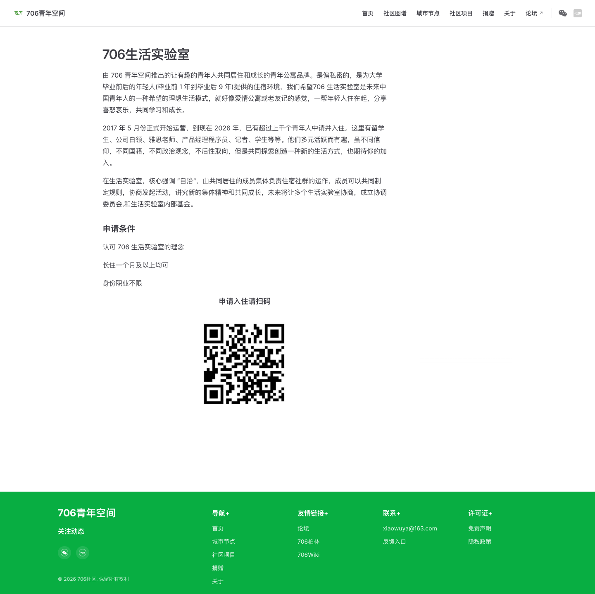

01 / 排版
左对齐单列长文，标题约 30px，正文约 16px、较宽松行高。文字优先于装饰。
这份原始版本保留官方项目页的视觉证据：白底、单列说明、克制的绿色品牌标记与通栏页脚。V1/V2/V3 是后来分别完成的设计提案。
原站截图：2026-10-02 · 1440 × 1439 · 查看当前官方页面 ↗

以下色值和尺寸来自截图估测，不代表官网公布的设计规范。
左对齐单列长文，标题约 30px，正文约 16px、较宽松行高。文字优先于装饰。
横向导航 → 项目与自治说明 → 申请条件 → 扫码入口 → 绿色多列页脚。
白色承担阅读，绿色聚焦品牌标识和页脚。原站没有 V1/V2/V3 的插画、角色或彩色卡片。